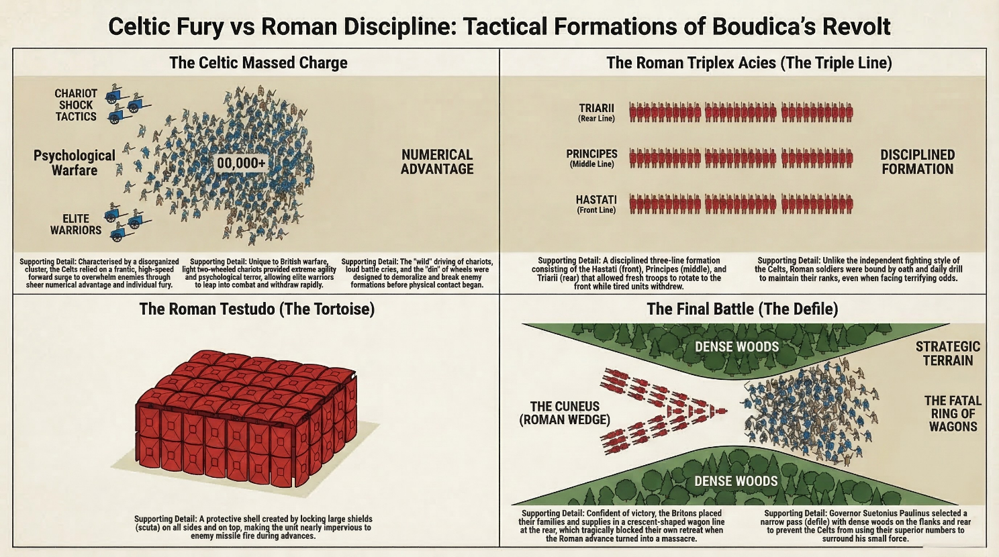
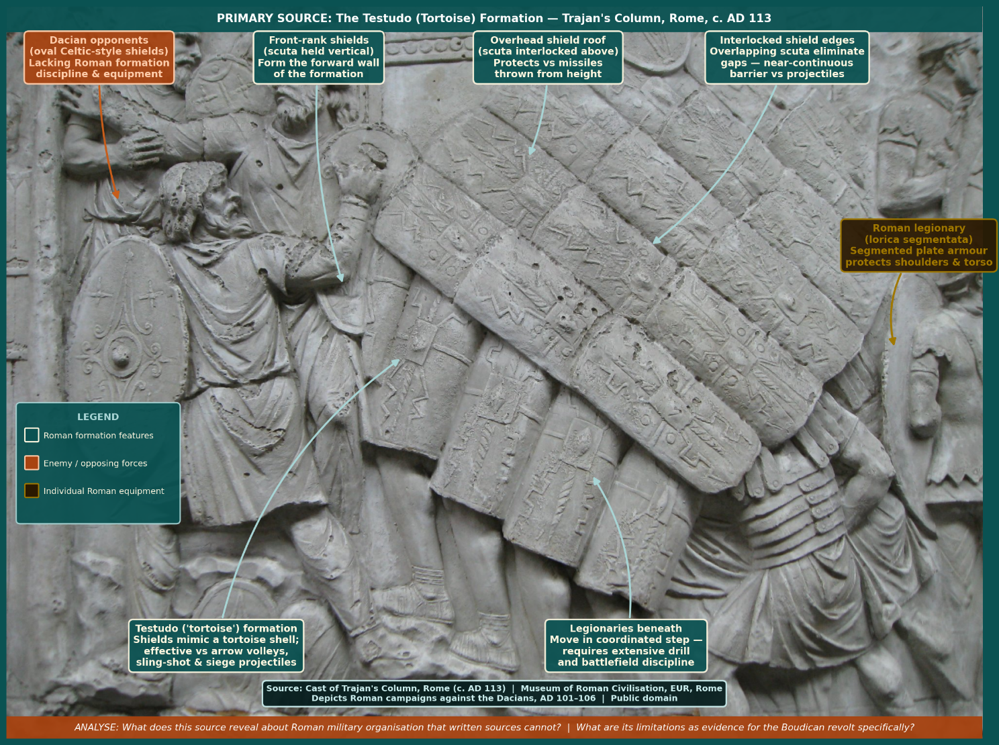

Lesson 8
What were the key differences between Celtic and Roman military organisation, tactics, and technology — and how did these differences shape the course and outcome of the revolt?
~27 min
AH11-1: Describes the nature of continuity and change in the ancient world
AH11-2: Proposes ideas about the varying causes and effects of events and developments
AH11-6: Analyses and interprets different types of sources for evidence to support an historical account or argument
To understand the key differences between Celtic and Roman military organisation, tactics, and technology — and to explain how these differences shaped the course and outcome of the revolt.
0 of 4 criteria met
By the end of this lesson, I can:
Teacher — Sharing LISC
Display the learning intention and success criteria on the board. Read them aloud and ask students to identify the key verbs (describe, explain, analyse, evaluate). This helps students understand that today’s lesson progresses through increasingly complex thinking. Check understanding: “Can someone put the learning intention into their own words?” (cold call).
In previous lessons, we explored the causes of the Boudiccan revolt, including the treatment of the Iceni and the role of Roman provincial administration. Today we examine the military dimension — how the two sides actually fought.
How much do you already know about Roman military tactics?
Teacher — Activating Prior Knowledge
Use cold call to ask 3–4 students what they wrote. This retrieval practice strengthens memory of previous content and connects it to today’s military focus. Accept all responses without correction — the purpose is retrieval, not assessment.
Retrieval check: “True or false: Boudicca’s revolt had only one cause. Thumbs up for true, down for false.” (Answer: false — there were multiple causes, both immediate triggers and underlying structural grievances.) If fewer than 80% correct, briefly distinguish immediate from underlying causes before proceeding.
Teacher — Modelling (‘I Do’)
Read the first paragraph aloud and model the thinking: “I notice that Celtic warriors fought for personal glory and honour — this is very different from a modern professional army. This tells me their motivation was individual, not collective.”
Pause after each key point to check understanding before continuing.
For Celtic peoples, warfare was not simply a matter of military strategy — it was a central expression of identity, honour, and social status. Celtic warriors fought for personal glory, for their tribe’s reputation, and for their chieftain’s honour. Individual combat was prized: the practice of challenging an enemy champion to single combat before a battle — a feature described in Irish epic literature and mentioned in accounts of Celtic warfare — reflects the centrality of individual honour in the warrior ethos.
Celtic armies were not professional standing forces. They were tribal levies — warriors who assembled when called by their chieftain, brought their own weapons and horses, fought under the immediate command of tribal nobles, and dispersed when the campaign ended. This gave Celtic forces great capacity for rapid mobilisation and surprise, but it meant they had no capacity for sustained campaigns with complex logistics.
| Celtic Strengths | Celtic Limitations |
|---|---|
| Numbers: could assemble very large forces quickly. | No supply lines: depended on looting for food and equipment. |
| Speed: chariots and light cavalry allowed rapid movement. | No permanent camps: could not sustain sieges or long campaigns. |
| Psychological warfare: battle cries, body paint, terrifying appearance designed to demoralise. | Inconsistent command: multiple tribal leaders without unified command structure. |
| Local knowledge: terrain, forest paths, and river crossings gave advantage in ambush. | Weapons: iron was available but equipment was less standardised than Roman arms. |
| Motivation: fighting for land, family, and freedom — high morale. | Tactics: effective in the charge, but without formations, vulnerable to disciplined counter-attack. |
Teacher — CFU
Use gesture voting: “Hold up A, B, C, or D with your fingers. On three — one, two, three — show me.” If fewer than 80% show C, re-teach using the table above.
How were Celtic armies primarily organised?
Teacher — Guided Reading (‘We Do’)
Have students read this section silently. Then use think-pair-share: “Turn to your partner and discuss: What made the chariot effective, and what were its weaknesses?” (60 seconds). Cold call 2–3 pairs to share.
A distinctive and uniquely British feature of Celtic warfare was the war chariot. Julius Caesar was so struck by it during his 55 BC expedition that he devoted considerable space in his account to describing chariot tactics. The Celtic war chariot was a light, two-wheeled vehicle drawn by two ponies, driven by a skilled charioteer who provided the warrior with mobility in battle.
The chariot was used to carry warriors rapidly along the battle line, creating confusion and fear in enemy formations. Warriors would drive along the enemy line, hurling javelins, then dismount to fight on foot, with the charioteer withdrawing to wait at the edge of the battle — ready to rescue the warrior or allow a rapid retreat if needed. Caesar described how British charioteers could run along the chariot pole and stand on the yoke while in full gallop — a feat requiring extraordinary skill and training.
Chariots were effective against unprepared or surprised opponents and in open terrain where their speed could be fully exploited. Against disciplined Roman formations in restricted terrain, however, their advantages were neutralised. At the final battle, where Suetonius selected a narrow defile with forests on either side, Celtic chariots had nowhere to manoeuvre and became a liability rather than an asset.
Primary Source: Julius Caesar, De Bello Gallico, Book IV, Chapter 33. Written c. 52 BC. Caesar describes Celtic chariot tactics during his 55 BC expedition, the earliest detailed account of this distinctively British form of warfare.
“In chariot fighting the Britons begin by driving all over the field hurling javelins, and generally the terror inspired by the horses and the noise of the wheels is sufficient to throw their opponents’ ranks into disorder. Then, after making their way between the squadrons of their own cavalry, they jump down from the chariots and engage on foot. In the meantime their charioteers retire a short distance from the battle and place the chariots in such a position that their masters, if hard pressed by numbers, have an easy means of retreat to their own lines. Thus they combine the mobility of cavalry with the staying-power of infantry.”

According to Caesar’s account, how did Celtic warriors use their chariots in battle?
Teacher — Modelling (‘I Do’)
Model a comparison using the previous section: “Notice how different the Roman approach is from the Celtic one we just studied. Celtic warriors fight for personal glory — Roman soldiers fight as part of a disciplined machine. Celtic armies assemble and disperse — Roman soldiers serve for twenty-five years.”
Have students follow along in the text as you read the first two paragraphs aloud.
By contrast, the Roman army was one of the most professionally organised military forces in the ancient world. The basic unit was the legion — a combined-arms force of approximately 5,000 heavily armed infantry (legionaries), organised into ten cohorts of six centuries each. Each century (roughly 80 men) was led by a centurion — an experienced professional soldier who was the backbone of Roman military effectiveness.
Legionaries were career soldiers who served for twenty-five years. They drilled constantly, maintained their equipment to strict standards, and were trained to operate in coordinated formations under the direction of officers. Unlike Celtic warriors, who fought for personal glory and tribal honour, Roman soldiers were bound by oath to the emperor, subject to strict military discipline, and motivated by pay, career progression, and the promise of land on retirement.
| Formation | Description |
|---|---|
| Testudo (Tortoise) | Legionaries locked shields above and around them to form a protective shell against missile fire. Used primarily for approaching fortifications under arrow or javelin fire. |
| Triplex Acies | Three cohort lines — the standard Imperial formation for absorbing a charge before a disciplined counterattack. |
| Wedge (Cuneus) | A spearhead formation used to pierce enemy lines at a chosen point, creating a breach through which cavalry or reserves could be committed. |
| Pilum Volley | Roman legionaries were trained to throw two heavy javelins (pila) simultaneously as the enemy closed within twenty metres. The pilum was designed to penetrate shields and then bend, making it impossible to throw back and dragging down the enemy’s shield arm. |
| Gladius Combat | After the volley, legionaries drew their short swords (gladii) and fought in close formation. The shield boss was used to punch the opponent off balance before delivering a short thrust — maximising effectiveness in tight formation fighting. |

Teacher — CFU
Use cold call. If they answer incorrectly, ask: “Who can explain why the Romans designed their javelins to bend?” Aim for 80%+ success before moving on.
What was the tactical purpose of the pilum’s design to bend on impact?
Drag (or click) to arrange the steps of a Roman battle engagement in the correct order:
Teacher — Scaffolding (‘We Do’)
This is the most analytical section. Use think-pair-share: Read the section together, then ask pairs to discuss: “Why might logistics matter more than bravery in a long military campaign?” (90 seconds). Cold call 2–3 pairs.
Draw a simple comparison on the board: Roman = fed, equipped, rested vs Celtic = looting, carrying, running out.
Perhaps more than any tactical advantage, the Romans’ most decisive military edge lay in logistics. A Roman army on campaign built a fortified camp (castra) every night — a rectangular fortification with ditches, ramparts, and gated towers that could be constructed in a few hours. Every camp followed a standard plan, so soldiers knew exactly where to go and what to do regardless of where they were. Supply wagons, medical facilities, engineers, and support staff accompanied every legion. Communication via a network of roads, messenger systems, and signal fires kept commanders informed across vast distances.
Boudicca’s forces, by contrast, had no supply infrastructure at all. They carried what they could loot and ate what they could seize in conquered towns. When the revolt progressed from the initial successful attacks on undefended cities to a final confrontation with a prepared Roman military force, this logistical asymmetry became decisive. An army that is fed, equipped, and in good health will always outlast one that depends on momentum and looting to survive.
Key Concept
The contrast between Celtic and Roman approaches to logistics reflects a deeper difference between the two societies. Rome’s capacity to sustain armies across vast distances was a product of its centralised state, taxation system, road network, and bureaucratic administration. Celtic Britain had none of these structures — not because it was inferior, but because it was organised on fundamentally different principles.
What was the most significant logistical weakness of Boudicca’s forces?
Choose the level that challenges you, or work through all three.
Teacher — Independent Practice (‘You Do’)
Students should attempt these only after a high success rate on the CFU questions. Direct all students to Foundation first.
Exit ticket: Students answer Foundation Q1 on a sticky note before leaving.
Identify and describe
Analyse and explain
Evaluate and debate
Click each card to reveal its definition.
Return to the success criteria from the start of this lesson. Can you now tick off each one? If any remain unticked, scroll back and review the relevant section.
Teacher — Review of Learning
Self-assessment for each criterion: “Thumbs up if confident, sideways if partly there, down if you need more help.”
Exit ticket: “On a sticky note, write one reason why Roman logistics were more important than Roman bravery in defeating Boudicca.” Collect as students leave.
How confident do you feel about this lesson’s content?